This is where you gain information about the battlefield and your mission objectives.OBJECTIVES
1. Filtering options: Show/Hide Axis, Allied and Capturable Spawns, Constructible Command Posts, Health and Ammo Cabinets, Constructible/Destructible Objectives and any Stealable Objectives.
2. Toggle through Primary and Secondary Objectives: this shows you what each Team must accomplish in the map.PLAYER SET UP
3. Play Audio Briefing: this plays or mutes the Audio Briefing describing the impending battle.
4. Objective Camera: this will show you how each Objective appears in the Map. It is a realtime game camera that shows the status of each objective.
5. Skills (Battle Sense, Light Weapons, Active Class Skill), XP: Experience Points, Medals won, Profile Name.
6. Team: Allies/Axis/Spectator
You can use Spectator Mode to observe gameplay without participating. The lamp shows which team has been selected. The counters show how many players are on each team.
7. Class: Soldier, Medic, Engineer, Field Ops, Covert Ops
Also includes Active Class Skill level, indicated by quartered backlights. The counters show how many players of each class are on the current team.
| Icon | Use |
| 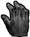 or |
Hand If you can Activate or Use an object, you'll be alerted by the Hand icon. If you cannot use it at that point, you'll see the red circle around the Hand icon. |
| 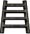 |
Ladder If you can climb up or down something, you'll be notified by the Ladder icon. Look Up and move Forwards to climb up, look Down and move Back to move down. |
|
Breakable The Breakable icon indicates that you can smash something, with your knife if need be. |
|
|
Backstab The Backstab icon indicates that you can stab a player from behind, killing them almost instantly. |
|
| 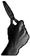 |
Constructible The Constructible icon alerts you that an Engineer on your team can construct an objective on this point. |
| 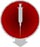 |
Revive The Revive icon appears when you can revive this fallen player by using your Syringe. |
|
Tank-Destructible Only This indicates an objective that can only be destroyed by escorting a Tank up to destroy it with its main gun. See Vehicles. |
|
| 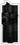 |
Dynamite This indicates an objective that can be destroyed with an Engineer's Dynamite but not with a Covert Ops' Satchel Charge. |
|
Satchel Charge This indicates an objective that can be destroyed with a Covert Ops' Satchel Charge as well as by an Engineer's Dynamite. |
|
| 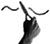 |
Disarm This icon indicates that an engineer can disarm the object with their Tool. |
 |
Steal Uniform This icon indicates that a Covert Ops can steal a uniform and disguise themselves. |

| 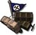 | 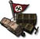 |  |
| Allied Constructible | Axis Constructible | Neutral Constructible |

| 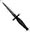 |
Knife (Keyboard 1) The knife is the most basic weapon and is generally used as a last resort when you run out of ammo, or if you want to kill your enemy silently. |
||||
|
Pistol (Keyboard 2) All Allied soldiers carry a Colt .45 pistol, while Axis soldiers carry a Luger 9mm. The Covert Op class is the only class that carries a pistol with a silencer. |
|
M1A1 Thompson or MP40 The Medic and Field Op classes carry a sub-machinegun in this slot - Allied players carry the M1A1 Thompson machine gun while Axis players carry the MP40. All other classes have a choice of two-handed Primary Weapons to carry in this slot. |
||||
|
M1S Garand or K43 (Silenced) Both of these specialized sniper rifles are equipped with fixed silencers and scopes. Alt-Fire (Z) will switch to scope view, while Zoom In (=) and Zoom Out (-) will change the view. Weapons with Zoomed-In scopes will appear less steady when aiming. The bar to the left of the crosshairs will determine how steady the weapon is (green is most steady, orange is moderately steady, and red is not steady). Firing when Crouched or Prone helps to steady the weapon. |
||||
|
FG42 This weapon combines the accuracy of a scope with the full-auto potential of a Sub Machine Gun. Alt-Fire (Z) zooms the scope. Full-Auto fire is not possible while zoomed-in. |
|||||
|
Sten MkII S This submachinegun fires very accurately without the need of a scope. It is also extremely quiet and doesn't require a silencer. Its only drawback is the fact that it overheats very easily so care must be taken to use short bursts. |
|||||
| 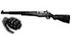 |
M1 Garand + M7 Grenade Launcher The Engineer's M1 Garand can only be reloaded once it has fired an entire clip of 8 bullets. Firing off the remaining rounds will automatically reload the M1 Garand, so long as you still have more ammunition for it. |
||||
|
K43 + GPG40 GranatWerfer The Engineer's M1 Garand and K43 rifles come with fixed Grenade Launcher attachments. Hitting Alt-Fire (Z) will load a Grenade for firing. After the Grenade is fired, Alt-Fire needs to be pressed again to load another Grenade. Firing Rifle Grenades depletes the Power Bar. You can still fire the rifle normally without a Grenade loaded, but the Grenade Launcher remains attached. Using up your load-out of Rifle Grenades will still leave you your full complement of Hand. |
| 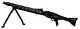 |
MG42 machine gun, mounted and mobile You can fire the MG42 while standing, but your shots will be wildly inaccurate. Go Prone and hit alt Fire to deploy the MG42's bipod; your fire will now be far more accurate. |
|
81mm Morser / 3 Inch Mortar Both Axis and Allies use variants of the French Brandt 81mm/3 Inch Mortar design. To use the Mortar, hit your Alt Fire Key (Z). Once the Mortar is readied, a Mortar round can be fired by pressing Fire. The elevation (range) and azimuth (lateral direction) of the Mortar can be adjusted by moving the mouse using the crosshairs as a guide. The lower the angle of elevation, the further the Mortar will fire. You can observe your fall of shot either by line of sight or by looking at your Command Map (G). Field Ops may designate targets for your Mortar as they call in Artillery Strikes. A targeting reticule will appear on your Command Map and in your Mortar sights. You can then aim for the reticle, in the knowledge that your Mortar rounds will be falling on the correct bearing, although you may still have to adjust elevation. |
|
|
Panzerfaust The Panzerfaust is a disposable one-shot weapon that fires a powerful rocket-propelled grenade with a significant blast radius. Firing the Panzerfaust depletes the Power Bar. It cannot be fired when Prone. |
|
| 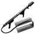 |
Flamethrower The Flamethrower fires a pressurized jet of liquid flame. It can't be partially reloaded; a full tank of fuel must be expended before it can be reloaded. |
|
Grenades (Keyboard 4) Grenades can be thrown immediately by pressing Fire, or press and hold Fire to activate their 5 second timer. You will hear the timer click and at the end of the 5 seconds the Grenade will explode. Be sure to throw the Grenade before the 5 seconds are up or else it will explode, likely killing you. |
|
|
Dynamite (Keyboard 6) Dynamite has a 30 second timer. Dynamite is used primarily for destroying objectives. Only Engineers can set and defuse Dynamite. Dropped Dynamite glows yellow. Fused Dynamite glows red and flashes on and off. The rate at which the Dynamite flashes red increases as the timer ticks down. |
|
|
Satchel Charges and Detonator (Keyboard 6) Satchel Charges are remote control explosive charges and can only be used by the Covert Ops class. The Satchel Charge Remote Control will indicate when you are close enough to the charge to detonate it by showing a green light. A red light indicates that you are too far away from the charge to detonate it. Engineers can defuse Satchel Charges. |
|
|
Land Mines (Keyboard 6) Land Mines can only be planted by Engineers. Players can see their own team's Land Mines marked with flags (Red for Axis, Blue for Allies). Mines planted by the enemy are not marked with flags unless they are spotted by a covert ops on your team. If you step on a Land Mine you will hear a click and hiss as it arms. The mine will only detonate when you step off it. Engineers can defuse mines even while a player is standing on them. Even your own team's Land Mines will kill you. If mines have been detected in the area by a Covert Ops, a message will appear on the screen telling you so. |
|
Browning M1919A4 mounted .30 cal machine gun The Browning .30 MG is a turret-mounted weapon usable by all classes. |
Heavy Weapons (Keyboard 3 or 0)
The Soldier can choose from one of five weapons to carry in the special weapon slot (3 or 0): The MP40 (Axis) or the M1A1 Thompson (Allies), the Panzerfaust, the Flamethrower, the Mobile MG42 or the Mortar. The Panzerfaust and Mortar use up the Power Bar.
|
Syringe (Keyboard 5) The Syringe is used to revive teammates (see "Special Abilities" below). When Medics pick up an Ammo Pack, either from a Field Ops or an Ammo Cabinet, they receive 1 extra syringe. |
|
|
Health Pack (Keyboard 6) Like the Field Ops' Ammo Packs, Health Packs can be dropped on the ground by first switching to them (6) and then pressing Fire. Dropping Health Packs depletes the Power Bar which must be at least half full to drop one. Enemies can also pick up your dropped Health Packs. |
|
Revive When a teammate dies, Medics will see a red icon over their body. As long as the icon is there, the Medic can revive them by using the syringe (5). Stand over a teammate to bring up the gray Syringe icon, then press Fire to revive. The icon disappears when the team-mate goes into Limbo. This happens when either the body takes too much damage or when the teammate selects to enter Limbo. |
| 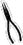 |
Engineer's Tool (Keyboard 5) The Engineer's Tool is used to arm, defuse, repair and build. A gray Wrench icon appears near the crosshair signal when this tool is necessary. To use, press and hold fire (left mouse button or CTRL) until the blue bar fills. |
|
Dynamite (Keyboard 6) Press fire to drop the Dynamite and automatically switch to the Engineer's Tool. To arm the Dynamite, Crouch over it, aim the Engineer's Tool at it and hold down fire. A blue bar will indicate your progress. |
|
|
Land Mines (Keyboard 7) Land Mines are dropped and armed exactly like Dynamite. Each team has a maximum of 10 Land Mines to place at any one time. |
|
Defuse Engineers can defuse Dynamite, Satchel Charges and Land Mines. To defuse, equip the Engineer's Tool (5) and position yourself over the item until the gray Defuse icon appears, then use the tool to defuse it. Engineers must remain with their crosshairs aimed directly at the object to defuse it. |
|
|
|
Repair Engineers can repair damaged vehicles and Machine Guns. To repair, simply equip the Engineer's Tool (7) and use by pressing and holding fire until the blue bar fills. |
|
|
Build The Engineer can build Command Posts or other constructible objectives in the mission by moving to them so that the gray wrench and hammer of the "Build" icon appear. The item is constructed in the same way an explosive is armed. Use the tool until the blue progress bar is full and construction is complete. While construction is in progress, a translucent image of the complete image will appear. |

|
Air Strike (Keyboard 5) When thrown, the Smoke Canister will emit colored smoke that will mark an Air Strike target. An Air Strike can only be called if the Power Bar is completely full. |
|
| 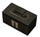 |
Ammo Pack (Keyboard 6) Pressing Fire with the Ammo Pack selected will drop an Ammo Pack. Each Ammo Pack depletes the Power Bar. The Power Bar must be at least half full to drop one. Note that any player can pick up an Ammo Pack, even the enemy. |
|
Artillery Strike (Keyboard 7) To call in an Artillery Strike, view the target through your Binoculars and then hit Alt-Fire (Z). Equip your Binoculars by pressing (B) or scrolling through your weapons with your mousewheel. Your Power Bar must be full to call in an Artillery Strike. You will hear an audio cue to confirm whether the target can be hit. Calling in an Artillery Strike also issues the target's map coordinates to any Soldiers on your team equipped with a Mortar. For the duration of the Artillery Strike, your designated target will appear on their Command Map and Mortar sights as a targeting reticule. Friendly Mortar Soldiers can then direct their firepower on to your target in addition to the Artillery Strike. |
|
Smoke Grenades (Keyboard 5) Smoke Grenades emit a thick smoke screen shortly after being thrown, ideal for blinding defenders and concealing troop movement. If you find yourself pinned down by an emplaced MG nest, a Smoke Grenade is an excellent way of negating its firepower advantage. |
|
|
Satchel Charges (Keyboard 6) Satchel Charges are remote-detonated demolition devices. Dropping a Satchel Charge will automatically switch your equipped weapon to the remote Detonator. Pressing fire will now cause the charge to explode. Note that the Satchel Charge detonator is limited by range, but not line of sight. A green lamp on the Satchel Charge Detonator indicates that you're in range and can detonate the charge by hitting your Fire key. A red lamp indicates that you're out of range. Note that enemy Engineers can defuse Satchel Charges. |
|
|
|
Binoculars (B or Keyboard 7) Covert Ops are issued with a pair of Binoculars as part of their initial weapons load-out. See Detection below. |
|
Disguise A Covert Ops can take the uniform off of a dead enemy soldier and wear it as a disguise. To do this, stand over the body of a dead soldier to bring up the gray Uniform icon. Keep Activate (F or Enter) pressed to take the uniform from the soldier and put it on. The fallen enemy soldier's body will remain without pants as a warning to his living team-mates that they have an infiltrator in their midst. While wearing an enemy uniform, the Covert Ops can use enemy Team Doors. A disguised Covert Ops will remain in disguise as long as they only use Smoke Grenades, Satchel Charges and Satchel Charge Detonators. They will only lose their disguise when using silenced weapons, the knife and Grenades if they do so in an enemy's field of view. This includes the enemy that they are currently engaging, which makes attacking from behind a very crucial tactic. Players can still identify disguised enemy Covert Ops. Disguised enemy Covert Ops at longer ranges will display the name and rank information of the player whose uniform they've stolen but at close range, disguised enemy Covert Ops will not display ANY name or rank information and may be safely shot. |
|
|
Detection The Covert Ops can detect Land Mines, enemy positions and enemy Command Post. To detect Land Mines, use the Binoculars by pressing Alt-Fire (Z) and scan the area. As you scan, you'll see enemy Land Mine indicators. Holding the Binocular crosshairs over it will flag it and broadcast a message to the whole team with the mine's location, as well as mark it on the Command Map. Detected mines can be destroyed with other explosives (Grenades, Rifle Grenades, Dynamite etc). The Covert Ops can also spot enemy positions. Any enemy that the Covert Ops can see is automatically displayed on the Command Map for the rest of the team. |
| Light Weapons rewards all player classes for kills with small arms and unscoped rifles. Players earn 3 XP per kill with a grenade, a Legshot, an Armshot or a Bodyshot and 5 XP per kill with a Headshot. |
Level 1 Light Weapons: Improved use of Light Weapon Ammunition
When you respawn, your ammo load-out will include one extra clip of ammunition.
Level 2 Light Weapons: Faster Reload
Your familiarity with your weapons allows you to reload your weapons 35% faster.
Level 3 Light Weapons: Improved Light Weapon Handling
Your combat experience allows you to handle your weapons with greater ease; SMG spread is reduced by 35% while Pistol recoil is halved.
Level 4 Light Weapons: Dual-Wield Pistols
Your single-handed weapon slot now has the option of dual-wield akimbo pistols.
| Battle Sense is a bravery skill that rewards all classes for surviving combat. Players gain ZERO points for each 30 seconds survived while 'Cold' i.e. not actively engaged in combat. You'll earn 2XP per 30 seconds while 'Warm' (you inflicted damage), 5XP per 30 seconds while 'Hot' (dealing AND receiving damage) and 8XP if 'Super-Hot' (killing and receiving damage). |
Battle Sense Level 1: Issued Binoculars
Battle Sense Level 1 gives you a pair of Binoculars which can be used to reconnoiter enemy positions. Only Covert Ops can use Binoculars to spot Land Mines for their team-mates.
Battle Sense Level 2: Improved Physical Fitness
The powerful aerobic benefits of prolonged combat activity enable your Stamina bar to recharge at 160% of the normal rate.
Battle Sense Level 3: Improved Health
As a wily battle-hardened veteran, your combat expertise effectively increases your maximum Health by 15 points.
Battle Sense Level 4: Trap Awareness
Even if you're not a Covert Ops, you'll be able to sense enemy Land Mines without the aid of Binoculars. Any mines within a certain range will appear as translucent outlines in your field of vision. Unless you're a Covert Ops, you won't be able to spot them for your team-mates.
| This rewards players for kills with Heavy Weapons. Players of any class will earn 3XP for a kill using an Emplaced or Mounted MG. Soldiers earn 3XP for kills with the Mobile MG42, Panzerfaust, Flamethrower or Mortar. You earn 3XP whether the kill is due to explosive splash damage or a direct hit. |
Heavy Weapons Level 1: Improved Projectile Resources
Your combat experience allows you to use your projectile weapons with greater ease. Firing a Panzerfaust or Mortar will now take 1/3rd less Power Bar than previously.
Heavy Weapons Level 2: Heavy Weapon Proficiency
Your technical know-how means that your overheating Emplaced or Mobile MG will cool at twice the normal rate.
Heavy Weapons Level 3: Improved Dexterity
You've been lugging heavy chunks of metal around the battlefield for so long, your speed penalty is now decreased. You will still be slowed when firing the Flamethrower, but when carrying it or your other weapons - your speed is now faster.
Heavy Weapons Level 4: Improved Weapon Handling
Such is your skill at toting weaponry, you are now able to handle a Light Weapon in one handed slot, freeing up the two handed slot for an alternate Heavy Weapon. This means you can now carry an SMG and a Mortar, for instance.
| This is a Medic-specific skill that rewards players for reviving team-mates and healing them with Health Packs. Medics earn 1XP each time they heal someone with a Health Pack and 4XP every time they revive another player with their Syringe. |
First Aid Level 1: Medic Ammo
Medics receive an extra ammunition clip and grenade with their basic weapon load-out.
First Aid Level 2: Improved Resources
2 syringes extra max ammo, 2 extra on spawn plus Medic pack only takes 15% Power Bar instead of 25%
First Aid Level 3: Full Revive
Syringes now return fallen team-mates to full health.
First Aid Level 4: Adrenalin Self
To equip the adrenalin shot press the Special Weapon 1 key (5 by default) twice and then press the primary fire key to inject the Adrenaline syringe. Doing so will impart a temporary bonus in Health and Stamina. For 10 seconds you will only suffer half damage from any attack but your Stamina Bar will not decrease at all even if you are sprinting. This will give you the ability to rush into and out of strongly defended areas which may prove of critical tactical importance.
| This is an Engineer-specific skill that rewards players for constructing/demolishing objectives and the use of explosives. Engineers earn 3 XP for repairing a vehicle or MG. They also earn XP for constructing or destroying constructible objectives: 5XP for a 50% of Power Bar objective such as repairing an MG nest, 7.5 for a 100% Power Bar objective like repairing a tank and up to 10XP for destroying an Objective. Engineers also earn 3XP for a Rifle Grenade kill, 4XP for a Land Mine or Dynamite kill, 4XP for defusing an enemy Land Mine and 6 points for defusing enemy Dynamite. |
Engineering Level 1: Improved use of Explosive Ammunition
Inventory includes four extra Rifle Grenade rounds and four extra Hand Grenades.
Engineering Level 2: Improved Dexterity
The experience of handling explosives in combat allows Engineers to arm and defuse Land Mines and Dynamite in half the time.
Engineering Level 3: Improved Construction and Destruction
The expertise of the veteran Engineer means that constructing and repairing objects and setting Dynamite or Land Mines uses 1/3rd less Power Bar charge than normal.
Engineering Level 4: Issued Flak Jacket
Only the most expert Engineers who have proven their ability to survive on the battlefield are issued with these expensive Flak Jackets which provides the player with 50% damage deflection from explosive weapons.
| This is a Field Ops-specific skill that rewards players for killing enemy players or destroying objectives with Artillery or Air Strikes, and supplying team-mates with ammo packs. Field Ops earn 1XP for giving one of your team's players an Ammo Pack. You'll earn 3XP for every enemy player you kill with an Air Strike, 4XP for killing them with an Artillery Strike and 5XP for destroying an Objective with either. |
Signals Level 1: Improved Resources
Your proven logistical efficiency is rewarded by access to Improved Resources. Every Ammo Pack you distribute will contain an extra magazine clip and issuing the Ammo Pack will only deplete your Power Bar by 15% instead of 25%.
Signals Level 2: Improved Signals
Your experience as a fire support observer gains you improved efficiency. Calling in an Artillery or Air Strike uses up only 2/3 of your Power Bar, allowing you to call in fire support more frequently than before.
Signals Level 3: Improved Air and Ground Support
Your expertise in identifying key enemy targets is rewarded by diverting more fire support resources to your designated targets. Each Air Strike now has two aircraft incoming and each Artillery Strike lasts twice as long.
Signals Level 4: Enemy Recognition
Your observational skill and battlefield experience now means that you can identify disguised enemy Covert Ops. Placing your cross-hairs over an Enemy infiltrator will result in a Disguised Enemy prompt and their location will be highlighted on your team's Command Map.
| This is a Covert Ops-specific skill group, which rewards players for reconnaissance, reporting battlefield intelligence, sabotage and Scoped Weapon skills. ANY player earns 5XP for kills with a headshot, 3XP for kills with a bodyshot, armshot or legshot. A Covert Ops will earn 3XP for each Land Mine spotted and 5XP for disguising themselves using an enemy uniform. You'll earn 5XP for every kill with a Satchel Charge and 7XP every time you use a Satchel Charge to destroy an Objective. |
Covert Operations Level 1: Improved Use of Scoped Weapon Ammunition
Each Ammo Pack you get from a Field Ops or Ammo Cabinet includes one extra clip of ammunition for your Scoped Weapon
Covert Operations Level 2: Improved use of Sabotage and Misdirection
Your expertise allows you to use your Satchel Charges and Smoke Grenades more often: your Power Bar usage will be reduced by 1/3rd.
Covert Operations Level 3: Breath Control
Your mastery of the Sniper's art results in a 50% reduction in both recoil jump and weapon sway with Scoped Weapons.
Covert Operations Level 4: Assassin
Your expertise with the knife allows you an instant kill with any backstab.
| Axis | Allied | Insignia |
| Schutze (Stz) | Private | (none) |
| Oberschutze (Otz) | Private 1st Class (PFC) |  |
| Gefreiter (Gfr) | Corporal (Cpl) |  |
| Feldwebel (Fwb) | Sergeant (Sgt) |  |
| Leutnant (Ltn) | Lieutenant (Lt) |  |
| Hauptmann (Hpt) | Captain (Cpt) |  |
| Major (Mjr) | Major (Maj) |  |
| Oberst (Obs) | Colonel (Cnl) |  |
| Generalmajor (GMj) | Brigadier General (BGn) | 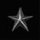 |
| Generalleutnant (GLt) | Lieutenant General (LtG) |  |
| General (Gnl) | General (Gen) |  |
Highest Fragger: most kills
Highest Experience: highest XP
Highest Ranking Officer: highest rank
Most Highly Decorated: most medals
Highest Battle Sense: highest Battle Sense
Best Engineer: Best Engineer
Best Medic: Best Medic
Best Field Ops: Best Field Ops
Best Light Weapons: Best Light Weapons
Best Soldier: Best Soldier
Best Covert Ops: Best Covert Ops
Highest Accuracy: Best ratio of shots fired to hits
I Ain't Got No Friends Award: Most team kills
Welcome Newbie: Lowest score under 100
| Highest Battle Sense | |
| Best Engineer | |
| 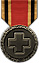 | Best Medic |
| Best Field Ops | |
| Highest Light Weapons | |
| Best Soldier | |
| 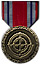 | Best Covert Ops |
FireTeam SayCalling Votes
Hit (Keyboard U) to type text messages to only members of your FireTeam. FireTeam Say text appears in Yellow.
FireTeam Voice Chat
Hit (Keyboard Z) to bring up the Voice Chat menu. This allows you to play audio messages to only the players on your FireTeam.
Within each of these categories a variety of votes can be called. The options are self explanatory.

2. Source: displays Local, Internet, or Favorite servers. Click to change.5. Server Browser
3. Gametype: displays only servers running the selected gametype, or "All". Click to change.
4. Filter checkboxes: filters out the following servers from the list - empty or full servers, password-protected servers, servers with Friendly Fire off, max lives enabled, Weapons Restrictions, PunkBuster protected, Anti-Lag and Balance Teams enabled.

| Paul 'Locki' Wedgwood | Game Designer / Managing Director |
| Francisca 'Freya' Wedgwood | Business Director |
| Art | |
| Richard 'Fluffy_gIMp' Jolly | Lead Artist / Creative Director |
| Francis 'Frankie' Hobbins | Artist / Animator |
| Per 'Per128' Abrahamsen | Additional Art |
| Programming | |
| Arnout 'RR2DO2' van Meer | Lead Programmer |
| Gordon 'digibob' Biggans | Programmer |
| Randy 'ydnar' Reddig | Programmer / Artist |
| Design | |
| Tim 'Marauder' Kautz | Designer / Audio Engineer |
| Edward 'Bongoboy' Stern | Designer / Writer |
| Level Design | |
| Matt 'Wils' Wilson | Lead Level Designer |
| Simon 'sock' O'Callaghan | Senior Level Designer |
| Mark 'nakedape' Fry | Designer / Writer |
| Thomas 'Q-Fraggel' Creutzenberg | Level Designer |
| Chris 'SHoD' Farcy | Level Designer / Artist |
| "Lloyd 'LloydM' Morris | Level Designer |
| Lee 'Llama' Mercer | Additional Level Design |
| Jonathan Moses | Producer |
| Doug Avery | Associate Producer |
| John Fritts | Installer |
| Steve Holmes | Production Coordinator |
| Matthew Beal | Production Tester |
| Laird M. Malamed | Sr. Executive Producer |
| Mark Lamia | VP North American Studios |
| Brad Saavedra | QA Project Lead |
| Evan Button | QA Project Lead |
| Matt McClure | QA Senior Project Lead |
| Nathaniel McClure | QA Floor Lead |
| Chris Keim | Network |
| Neil Barizo | Compatibility |
| Marilena Rixford | QA Manager |
| Tim Vanlaw | Manager, Code Release Group |
| Jason Levine | Sr. Lead, Code Release Group |
| Jef Sedivy | Lead, Code Release Group |
| Bob McPherson | Manager, Customer Support |
| Kevin Cloud | Executive Producer |
| Timothee Besset | Additional Programming |
| Tony Ray | President |
| Bjorn Christoph | Senior Project Leader |
| Research / Technical |
| Brett Lentz |
| Paul Seal |
| Ryan Mannion |
| Jason Roman |
| Daniel Ferguson |
| Wouter Tromp |
| Barry Worthy |
| Mat Collins |
| User Support / Documentation |
| Ken Creedon |
| Stuart Dunsmore |
| Jason Allison |
| Hendrik Thole |
| Kim Andersen |
| Dougald Beaudoin |
Drew
Markham - Voice of Allied / Axis soldiers
Neil Ross - Voice of Axis Commander
Granville van Dusen - Voice of Allied Commander
Nerve Software
- Intro Movie Masters
Return to Castle Wolfenstein was developed by Gray Matter Studios & Nerve Software. We would like to thank both developers for their help and support during the development of Wolfenstein: Enemy Territory.
©2003 Id Software, Inc. All rights reserved. Wolfenstein: Enemy Territory, Return to Castle Wolfenstein, the Return to Castle Wolfenstein logo.